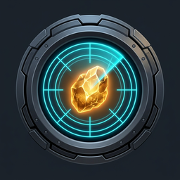

Agreement is required to use Nexus Ore Radar. No reports are being collected.
Choose a season.
No completed mining runs in this period.
No scan results yet.
Free use requires automatic contribution of complete Season 0 pirate-raid reports from mining missions to the Radar maintainer while Nexus and the extension are running.
All fields contained in those raid reports are included. Ordinary mining yield and breakdown reports, and reports from other seasons, stay local. Login credentials are never uploaded.
A concise reference is available from the Guide button at the top of Radar. Read guide
Radar finds mining belts and tracks the results of your mining missions. It does not dispatch fleets.
Keep Nexus open and signed in in the same browser, then connect Radar to Season 0, New Frontier or Beta. Use Change season to switch. Each account and season keeps its own data. Radar checks for new reports automatically while connected; Sync refreshes mining analytics.
Choose a Search origin and an update radius in light-years, then use Update belts to refresh belt information. Progress shows the checking speed and estimated time remaining. Cancel stops the current scan.
Filter saved results by richness multiplier, remaining resource level, security zone and belt type. The custom multiplier accepts your own threshold. Changing filters updates the displayed results without starting a scan. Use Manage Locations below the origin selector to add, remove or reorder saved search locations.
Fleet & Presets selects the mining ships and escorts used for local estimates and saves named fleets for the current account and season. Ship values come from the current Nexus shipyard data and are refreshed after 24 hours.
Optimize yield / fuel / time works when one belt resource type is selected. It estimates complete mining cycles, expected yield, full-fleet fuel and mission duration, then orders destinations by the same yield-per-hour, fuel-per-unit and time trade-offs used by the Personal App. It does not dispatch fleets. If the required breakdown history is unavailable, Radar leaves the normal result order in place.
Each system card shows its security zone and distance from your origin. Belt rows show richness, resource type, remaining amount and percentage. Optimized rows also show estimated yield per hour, fuel per unit and duration. Click the system name to copy it. SEND / SENT marks a system for your own tracking; it does not send ships. Active mining missions mark their exact target fields and systems.
Results reflect the last observations, not a reservation: other players may mine a belt before you arrive. Search and Matched Systems & Belts can be hidden independently.
Total shows recorded history. Last 24hrs starts at midnight on your PC; Last 7 days starts at midnight Monday. Yields, graphs, fuel, run and cycle totals, ship yields and breakdown rates all follow the selected period. Graphs combine Ore + Silicates and can be hidden separately.
Yields / fuel cost shows averages per run for dedicated ships. Expand a resource row for its median and middle 50% range. Fuel includes the dispatched escorts and is an estimate, not a payment receipt. Average duration uses the full recorded mission time. A dash means a value is unavailable, not zero.
Analytics depend on reports and mission details captured after Radar was first used for that account and season. Earlier reports are deliberately not imported, and missing reports cannot be recreated.
Your analytics, belt observations and saved locations are stored in this browser. Clearing extension data or uninstalling can remove them. Closing the browser does not continue a scan or collect reports offline.
Free use requires automatic sharing of complete Season 0 mining pirate-raid reports with the Radar maintainer. Ordinary mining yield and breakdown reports and reports from other seasons stay local. Login credentials are not uploaded. Declining the agreement disables Radar.